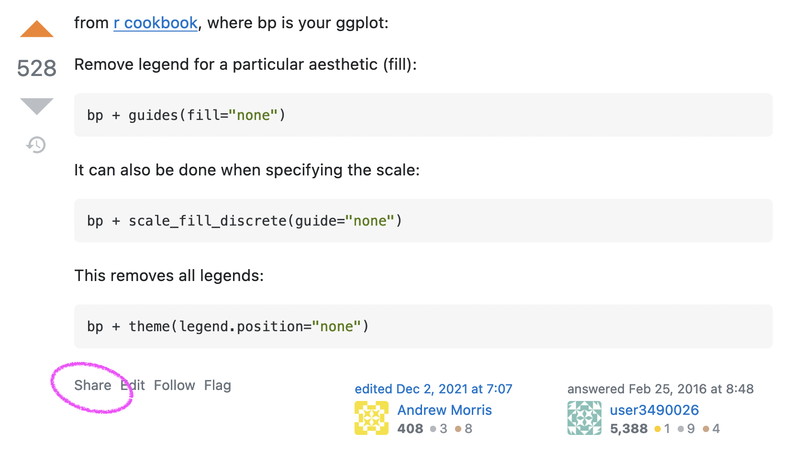
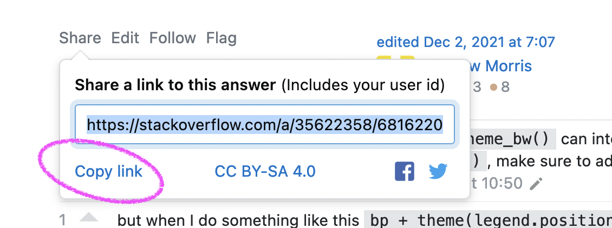

rbtl - Data Visualisation
Lars Schöbitz
Global Health Engineering - ETH Zurich
2022-05-03
Today
- Solving coding problems
- Homework questions
- Exploratory Data Analysis with
ggplot2 - Working with branches in git
- Live Coding Exercise
- Programming Exercise
- Homework
Learning Objectives
- Learners can describe the four main aesthetic mappings that can be used to visualise data using the ggplot2 R Package
- Learners can control the colour scaling applied to a plot using colour as an aesthetic mapping
- Learners can compare three different geoms and their use case
- Learners can apply a theme to control font types and sizes within a plot
Solving coding problems
Tipps for search engines
- Use describe verbs that describe what you want to do
- Be specific
- Add R to the search query
- Add the name of the R package name to the search query
- Scroll through the top 5 results (don’t just pick the first)
Example: “How to remove a legend from a plot in R ggplot2”
Stack Overflow
What is it?
- The biggest support network for (coding) problems
- Can be initimidating at first
- Upvote system
Workflow
- First, briefly read the question that was posted
- Then, read the answer marked as “correct”
- Then, read one or two more answers with high votes
- Then, check out the “Linked” posts
- Always give credit for the solution
Give credit
Give credit
Give credit
Other sources for help
- RStudio Community Forum: https://community.rstudio.com/
- Our rbtl Slack channel
- Documentation websites: https://dplyr.tidyverse.org/
- Twitter community: #rstats

Minimal reproducible example (reprex)
- Needed when asking questions online
- We will practice this in another class
- Good support information: https://www.tidyverse.org/help/#reprex
Live Coding Exercise
ae-10-data-science-lifecycle
- Head over to the GitHub Organisation for the course.
- Find the repo for week 10 that has your GitHub username.
- Clone the repo with your username to the RStudio Cloud.
- Open the file:
ae-10a-lifecycle.qmd - Use your Sticky Notes to let me know when you are ready.
Break
10:00
Exploratory Data Analysis with ggplot2
R Package ggplot2
- ggplot2 is tidyverse’s data visualization package
gginggplot2stands for Grammar of Graphics- Inspired by the book Grammar of Graphics by Leland Wilkinson
- Documentation: https://ggplot2.tidyverse.org/
- Book: https://ggplot2-book.org

Code structure
ggplot()is the main function in ggplot2- Plots are constructed in layers
- Structure of the code for plots can be summarized as

Live Coding
Visualising numerical data
Types of variables
numerical
discrete variables
- non-negative
- whole numbers
- e.g. number of students, roll of a dice
continuous variables
- infinite number of values
- also dates and times
- e.g. length, weight, size
non-numerical
categorical variables
- finite number of values
- distinct groups (e.g. EU countries, continents)
- ordinal if levels have natural ordering (e.g. week days, school grades)
Tutorial:
Programming
ae-11-data-visualisation
- Open the file:
ae-10b-lifecycle.qmd - Work through the exercises
- Use your sticky notes to indicate if you need support
30:00
Homework Assignment
Submission
- All details in assignment week 10
- Due: Tuesday, 4th May at 23:59 (2 points)
Thanks! 🌻
Slides created via revealjs and Quarto: https://quarto.org/docs/presentations/revealjs/ Access slides as PDF on GitHub
All material is licensed under Creative Commons Attribution Share Alike 4.0 International.
Templates
Background iFrame
Tabsets
Columns
Left column
Right column
mpg cyl disp hp drat wt qsec vs am
Mazda RX4 21.0 6 160.0 110 3.90 2.620 16.46 0 1
Mazda RX4 Wag 21.0 6 160.0 110 3.90 2.875 17.02 0 1
Datsun 710 22.8 4 108.0 93 3.85 2.320 18.61 1 1
Hornet 4 Drive 21.4 6 258.0 110 3.08 3.215 19.44 1 0
Hornet Sportabout 18.7 8 360.0 175 3.15 3.440 17.02 0 0
Valiant 18.1 6 225.0 105 2.76 3.460 20.22 1 0
Duster 360 14.3 8 360.0 245 3.21 3.570 15.84 0 0
Merc 240D 24.4 4 146.7 62 3.69 3.190 20.00 1 0
Merc 230 22.8 4 140.8 95 3.92 3.150 22.90 1 0
Merc 280 19.2 6 167.6 123 3.92 3.440 18.30 1 0
Merc 280C 17.8 6 167.6 123 3.92 3.440 18.90 1 0
Merc 450SE 16.4 8 275.8 180 3.07 4.070 17.40 0 0
Merc 450SL 17.3 8 275.8 180 3.07 3.730 17.60 0 0
Merc 450SLC 15.2 8 275.8 180 3.07 3.780 18.00 0 0
Cadillac Fleetwood 10.4 8 472.0 205 2.93 5.250 17.98 0 0
Lincoln Continental 10.4 8 460.0 215 3.00 5.424 17.82 0 0
Chrysler Imperial 14.7 8 440.0 230 3.23 5.345 17.42 0 0
Fiat 128 32.4 4 78.7 66 4.08 2.200 19.47 1 1
Honda Civic 30.4 4 75.7 52 4.93 1.615 18.52 1 1
Toyota Corolla 33.9 4 71.1 65 4.22 1.835 19.90 1 1
Toyota Corona 21.5 4 120.1 97 3.70 2.465 20.01 1 0
Dodge Challenger 15.5 8 318.0 150 2.76 3.520 16.87 0 0
AMC Javelin 15.2 8 304.0 150 3.15 3.435 17.30 0 0
Camaro Z28 13.3 8 350.0 245 3.73 3.840 15.41 0 0
Pontiac Firebird 19.2 8 400.0 175 3.08 3.845 17.05 0 0
Fiat X1-9 27.3 4 79.0 66 4.08 1.935 18.90 1 1
Porsche 914-2 26.0 4 120.3 91 4.43 2.140 16.70 0 1
Lotus Europa 30.4 4 95.1 113 3.77 1.513 16.90 1 1
Ford Pantera L 15.8 8 351.0 264 4.22 3.170 14.50 0 1
Ferrari Dino 19.7 6 145.0 175 3.62 2.770 15.50 0 1
Maserati Bora 15.0 8 301.0 335 3.54 3.570 14.60 0 1
Volvo 142E 21.4 4 121.0 109 4.11 2.780 18.60 1 1
gear carb
Mazda RX4 4 4
Mazda RX4 Wag 4 4
Datsun 710 4 1
Hornet 4 Drive 3 1
Hornet Sportabout 3 2
Valiant 3 1
Duster 360 3 4
Merc 240D 4 2
Merc 230 4 2
Merc 280 4 4
Merc 280C 4 4
Merc 450SE 3 3
Merc 450SL 3 3
Merc 450SLC 3 3
Cadillac Fleetwood 3 4
Lincoln Continental 3 4
Chrysler Imperial 3 4
Fiat 128 4 1
Honda Civic 4 2
Toyota Corolla 4 1
Toyota Corona 3 1
Dodge Challenger 3 2
AMC Javelin 3 2
Camaro Z28 3 4
Pontiac Firebird 3 2
Fiat X1-9 4 1
Porsche 914-2 5 2
Lotus Europa 5 2
Ford Pantera L 5 4
Ferrari Dino 5 6
Maserati Bora 5 8
Volvo 142E 4 2Code Animations
Preview Links
Preview Links
Break
15:00